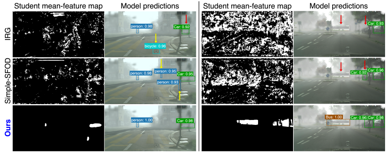
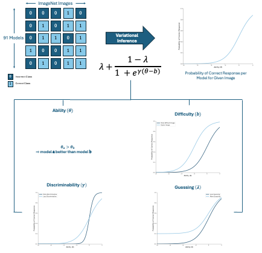

Software Engineering Intern
- Optimized large-scale build pipelines by implementing and configuring ccache, significantly reducing compilation duration.
- Improved development efficiency and reduced turnaround time for code changes.
|
|
M.S. Computer Science, 2027 (expected)
Bachelor's in Computer Science, 2025 |
|

Foreground Confusion under Domain Shift: The Hidden Bottleneck in Source‑Free Domain Adaptive Object Detection
CVPR, 2026
We propose FOCUS-SFOD, a lightweight method that fixes two major problems in source-free domain adaptive object detection: noisy pseudo-labels and confusion between foreground and background. Using CLEAN and PAERL losses, our approach improves localization and classification, boosting performance by +3.9 mAP without any extra inference cost.

On Evaluation of Vision Datasets and Models using
Human Competency Frameworks
DMLR@ICML, 2024
We use Item Response Theory (IRT) to assess model calibration, select informative data subsets, and demonstrate the usefulness of various latent parameters for analyzing and comparing models and datasets in computer vision. |
Software Engineering Intern

REU FoDOMMaT Fellow
|